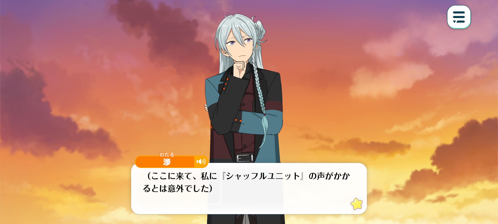
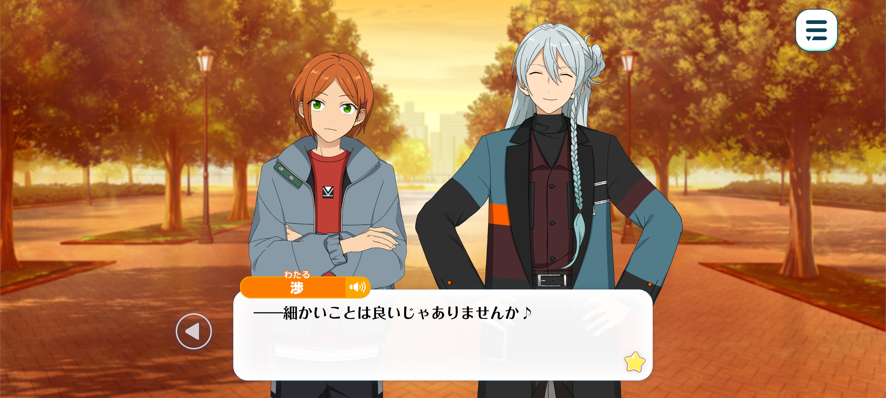
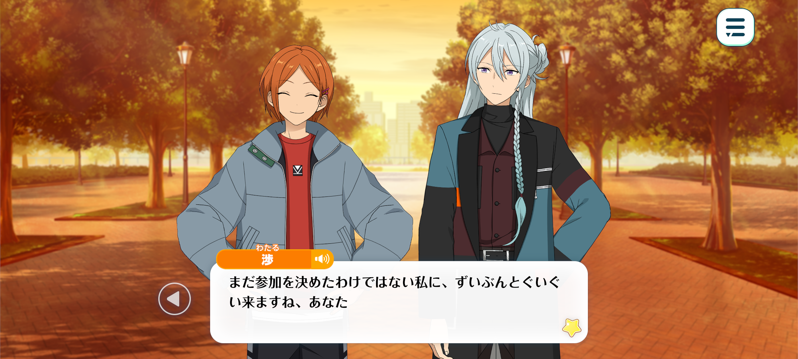

Easter To You
⌒Careful 2⌒


Wataru: (I certainly never expected to receive an invitation to join a shuffle unit at a time like this.)
(What's more, all of my juniors are going out of their way to welcome me!)
(...Fufufu. To think I'd be invited to join a unit... It's an opportunity I never could have imagined!)
(I'm interested in Easter Fes, too, and I've always hoped that someday I'd get the chance to take part in a shuffle unit...)
(So really, there's no reason for me to turn down this invitation.)
???: ….~y, he~y!
Wataru: Hm? I could have sworn I heard someone calling...
???: He~y, Hibiki-senpa~i! Over here! I'm over here!
Wataru: That is 2wink’s... He's waving enthusiastically and calling me over.
Very well! Just wait there a moment, please~!

Hinata: Huh? Is that a hang glider? No way... Is he actually planning to glide all the way down from that hot-air balloon to the ground?!
But... I wonder where it'll go after that. Can you even install an autopilot function on a hot-air balloon?
Wataru: —Isn't that a rather trivial detail? ♪
Hinata: Uwaaa!?
Wataru: You called, and here I am! Amazing! Your very own Wataru Hibiki...☆
Hinata: You actually came all the way down! And in just a few seconds...!?
So you really could hear me calling?
Wataru: They don't call Wataru's hearing exceptionally sharp for nothing! Now then, what can I do for you?
Hinata: Well, when I stepped outside the ES Building, I happened to spot you up in the sky. Before I knew it, I'd started chasing after you!
What's it like riding in a hot-air balloon? It must feel amazing to have the wind blowing against your skin, right?
I'd actually been on one for a short ride before, and went around the school, but I got off again pretty quickly, so I didn't really get to take it all in.
Wataru: How shall I put it...? It's a peaceful, comfortable journey through the sky. There's something very pleasant about taking your time and admiring the scenery from above.
Hinata: That sounds so cooool~~. I'm jealous! If I want to experience that feeling of being up in the air, the only thing I can really turn to is the flying trapeze.
I wanna go as high as you do, Hibiki-senpai, and see all kinds of scenery...
Wataru: Perhaps it's precisely because you know the joy of being suspended in midair that you long to experience it again. Most people wouldn't even dream of trying the flying trapeze, after all.
Riding in a hot-air balloon is much easier than attempting the flying trapeze, of course.
Hinata: ...I guess you're right. Since I do acrobatics so regularly, the flying trapeze has always felt much more familiar to me.
Actually, after that ride, I got a little interested in hot-air balloons and even looked around for places that offered experiences...
Apparently, though, they're often cancelled depending on the wind direction and strength on the day. It's surprisingly hard to find the right opportunity.
Wataru: Unless the weather is practically windless, even getting the balloon inflated can be quite a challenge. Hot-air balloons are very sensitive to the wind.
Hinata: Oh, really~! I thought a little breeze would actually be a good thing. You're so knowledgeable, but I suppose that's only natural for someone who rides in one so often!
I'd love to keep learning all sorts of things from you, Hibiki-senpai. After all, we're going to be in a shuffle unit together...♪

Wataru: Oh! At last, you've brought it up! I was beginning to wonder if you'd called me down here just to have a little chat.
Hinata: It really was just a little chat! And running into you was a complete coincidence...
I wanted to start by talking about everyday things and gradually getting to know you better, senpai. That's why I came over to talk to you.
Well, I was planning to eventually ask you to join our shuffle unit, just like this...♪
Wataru: You're certainly being rather forward, considering I haven't even decided whether I'll take part yet.
Hinata: Ahaha, sorry! It's just that I couldn't help thinking how much I wanted you to join us, Hibiki-senpai...
Besides, lately I've been making a conscious effort to take the initiative and go after the things I want!
Wataru: My, my! You're surprisingly bold for someone with such a cute smile, aren't you? I can see the fire in your eyes, too.
...However, I'm afraid I can't give you a definite YES just yet. I still intend to hear what Anzu-san has to say later, you see...☆
Hinata: Hmm, I thought that might be the case. Hiiro-kun and Shinobu-kun already got in touch with you earlier, too, so I had a feeling you'd say that.
I'll just take this as a little bit of teasing, then, and keep waiting until you finally say YES, senpai.
Wataru: How eager of you...
Although I do hear about your accomplishments, you're all members of units different from my own, after all.
I don't really know how much each of you has grown, or what you're capable of now.
Are you still little chicks with your eggshells intact? Or have you long since left the nest and grown into strong birds, soaring through the sky on powerful wings...?
Even if we're all flying through the same sky, it would be rather lonely if I were the only one soaring at a higher altitude. After all, a flock is meant to fly together.
Hinata: ...But we're not chicks anymore.
Wataru: That's something I'll have to find out for myself from here on.
I'll need to see your growth and experience it firsthand. Only then can I decide whether we're ready to spread our wings and take flight together...